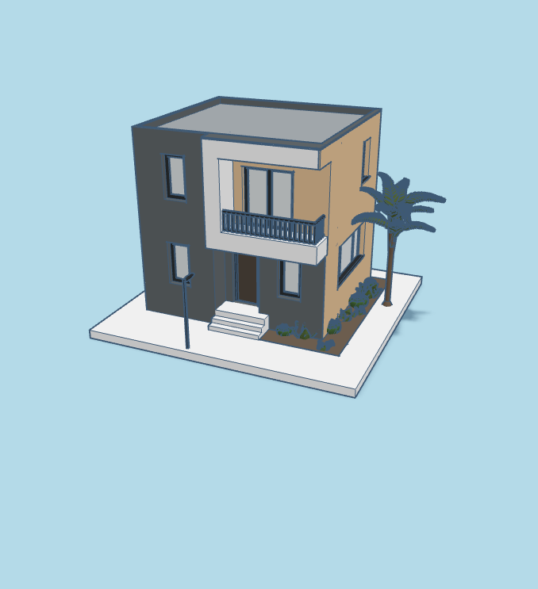

3D


The object is a modern two-story house in grey, white, and beige with a small balcony, garden, palm tree, stairs, and a streetlight in front. It has multiple windows, sliding doors, and a flat textured roof, with a clean and symmetrical design that balances shapes and colors across the structure. The inspiration came from Pinterest and modern house designs seen in video games like Minecraft, and I chose it because it was simple, visually appealing, and a good first project to build in Tinkercad. The model is meant as a simple architectural render viewed from different angles, mainly built using cube shapes, along with cylinders, spheres, wedges, and holes to create details like the palm tree, streetlight, windows, and doors. I used different scale sizes and grouping to organize parts like the balcony and window frames, and holes to add depth and realism. The most challenging part was coloring and separating the walls to avoid a flat look, so I adjusted placement and layering to balance the design, and I would make the model slightly bigger next time for easier precision.